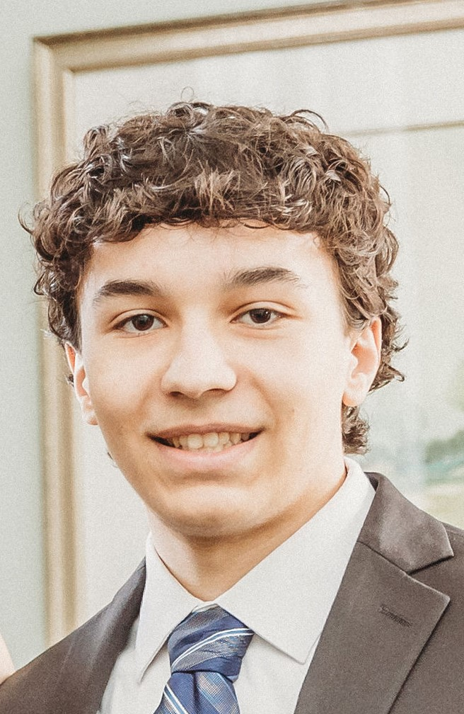

Hello, I’m Tyler Heckel
I am from Port Chester, New York and I graduated from Villanova University with a Bachelor of Science in Computer Science with minors in Cybersecurity and Engineering Entrepreneurship.
I have developed expertise in Software Engineering with extensive tech skills in Web Development, Mobile App Development, Game Development, Machine Learning, Software Testing, Data Analytics, and Cybersecurity, as well as business management skills in Market Research, Customer Acquisition, Prototyping, and Project Management.
I am actively searching for full-time opportunities to use my skills to make a positive impact and advance my career. I have developed this website myself to showcase my talent, professional experience, and project portfolio.
View My Resume